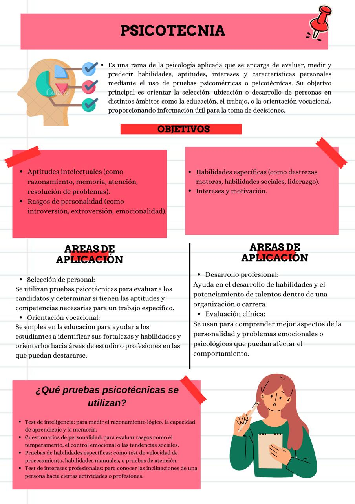
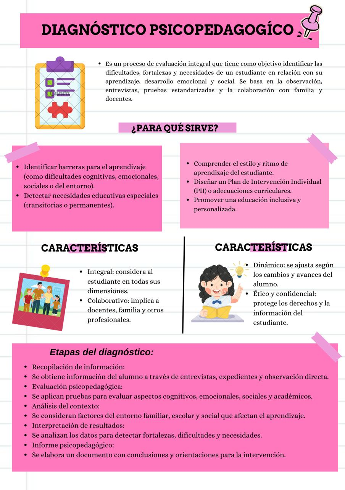

Libro Interactivo



Díaz Barriga, F., & Hernández, G. (2002). Estrategias docentes para un aprendizaje significativo: Una interpretación constructivista. McGraw-Hill.
Juárez, F. (2008). Orientación educativa: Teoría y práctica en contextos escolares mexicanos. Trillas.
Ramos, M. T., & Sánchez, A. (2012). Evaluación psicopedagógica: Fundamentos, procedimientos e instrumentos. Trillas.
Secretaría de Educación Pública. (2017). Modelo educativo para la educación obligatoria: Educar para la libertad y la creatividad.
https://www.gob.mx/cms/uploads/attachment/file/207252/Modelo_Educativo_OK.pdf
Zorrilla, M. (2004). Pedagogía: Conceptos fundamentales. Trillas.